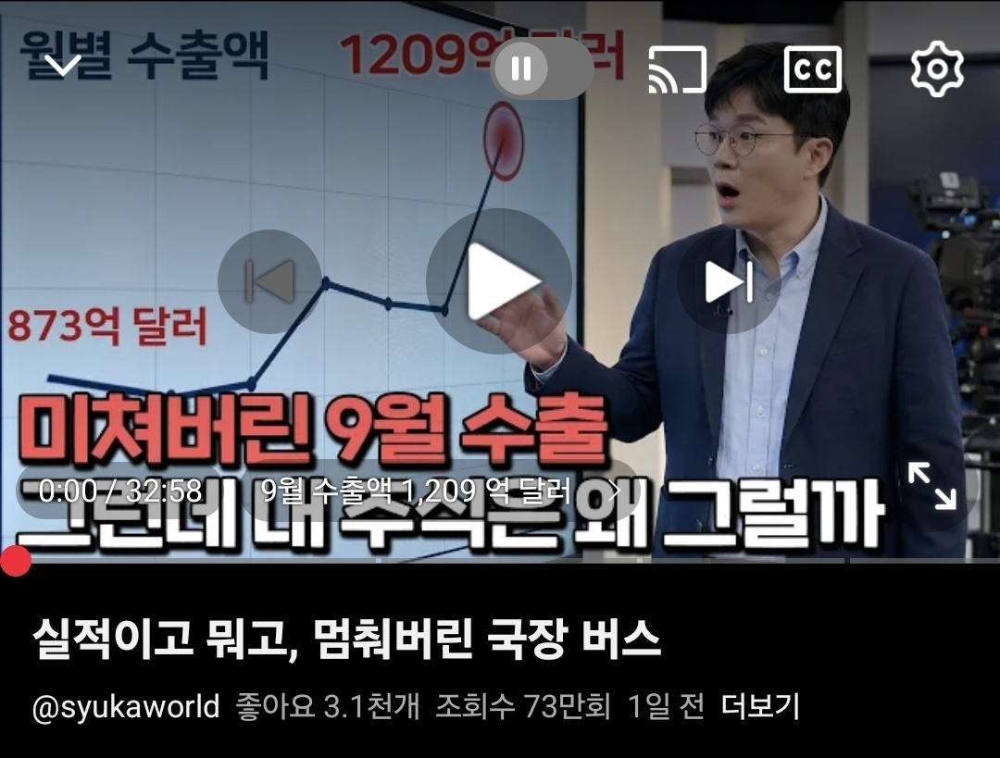

어제 이거 보는데 대충 이해가 가는 설명이 나오더라
이미 반도체 렐리에 지친 개미들은 구조선만 오면 무조건 탑승한다.
그래서 횡보로 보이는 주식은 사실
1) 호재에 오른다
2) 자동매도에 걸려서 다시 내려간다
3) 하락세로 판단해서 매입을 중단한다
라는 벽에 막힌 상태.
즉 반도체주식 그만두고싶어하는 개미들이 다 처분안되면
아무리 100조건 200조건 영업이익 공개해봐야 못오른다는거.
나는 이미 닉스 구조선 안기다리고 싹다 처분하고 26만원에 삼전샀으니까
걍 개미들 다 나갈떄까지 주식창 안보는게 맞는듯....
그래서 시체밭 넘어야하는 소리들 하지